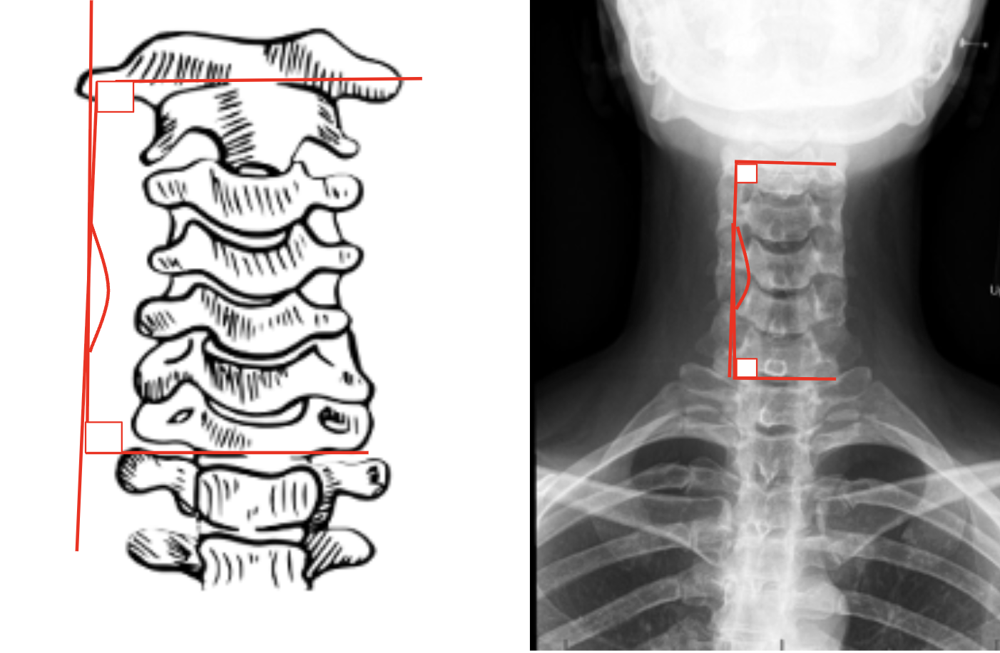

1) Description of Measurement
The C2–C7 Coronal Cobb Angle quantifies coronal (frontal plane) alignment of the cervical spine. It is used to assess cervical scoliosis or lateral deviation of the cervical spine from the vertical axis.
This measurement provides a standardized method to evaluate deformity severity and progression, particularly in cases of congenital scoliosis, degenerative changes, trauma, or postsurgical malalignment.
It is analogous to the Cobb angle used in thoracolumbar scoliosis evaluation but applied to the cervical region (C2–C7).
2) Instructions to Measure
Optional: For regional deformities (e.g., localized curves), the angle may be measured between the end vertebrae of the most tilted segments within the curve rather than fixed C2 and C7 levels.
3) Normal vs. Pathologic Ranges
4) Important References
Ames CP, Blondel B, Scheer JK, et al. Cervical radiographical alignment: comprehensive assessment techniques and potential importance in cervical myelopathy. Spine (Phila Pa 1976). 2013 Oct 15;38(22 Suppl 1):S149-60. doi: 10.1097/BRS.0b013e3182a7f449.
Tang JA, Scheer JK, Smith JS, et al; ISSG. The impact of standing regional cervical sagittal alignment on outcomes in posterior cervical fusion surgery. Neurosurgery. 2012 Sep;71(3):662-9; discussion 669. doi: 10.1227/NEU.0b013e31826100c9.
Kim HJ, Lenke LG, Oshima Y, et al. Cervical Lordosis Actually Increases With Aging and Progressive Degeneration in Spinal Deformity Patients. Spine Deform. 2014 Sep;2(5):410-414. doi: 10.1016/j.jspd.2014.05.007. Epub 2014 Aug 27.
Fan Y, Wang J, Cai M, Xia L, Wang X. The Correlation Between Postoperative Cervical Sagittal Alignment and Spine Sagittal Alignment in Adolescent Idiopathic Scoliosis: A Meta-Analysis. World Neurosurg. 2020 Feb;134:e311-e316. doi: 10.1016/j.wneu.2019.10.064. Epub 2019 Oct 18.
5) Other info....
Coronal Cobb angle > 10° is generally considered pathologic and may require serial follow-up for progression
The C2–C7 Coronal Cobb Angle is used to quantify coronal alignment and deformity in both degenerative and congenital cervical scoliosis.
Always ensure the AP view is centered and symmetric, as rotation or tilt can artifactually alter the angle.
When performing postoperative assessment, note fusion levels and any compensatory changes in the subaxial spine.
This measurement can be complemented by C7 coronal plumb line deviation (C7PL) to assess global coronal balance.
CT or EOS imaging provides higher accuracy for preoperative planning in complex deformities.